traços que habitam o tempo
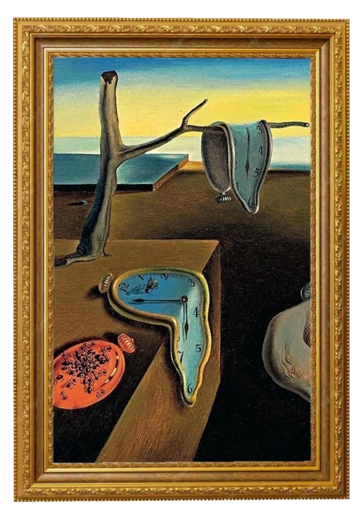
ilustração & expressão
Esta seção reúne o traço como linguagem da linha mais tímida ao gesto mais ousado. Aqui o desenho é tratado como poesia visual: cada imagem carrega um tempo, uma emoção, uma história que palavras sozinhas não conseguiriam contar.
Você encontrará dois universos distintos: as artes autorais, criadas por quem faz parte desta revista, e as artes conhecidas, obras de artistas que marcaram a história e que seguem inspirando olhares até hoje.
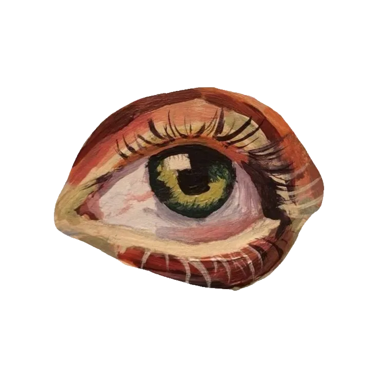
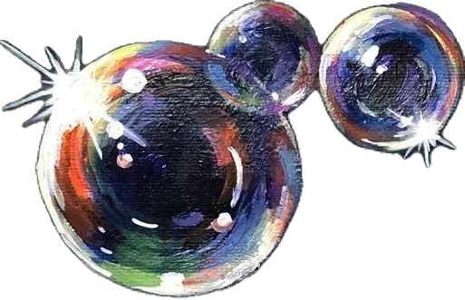
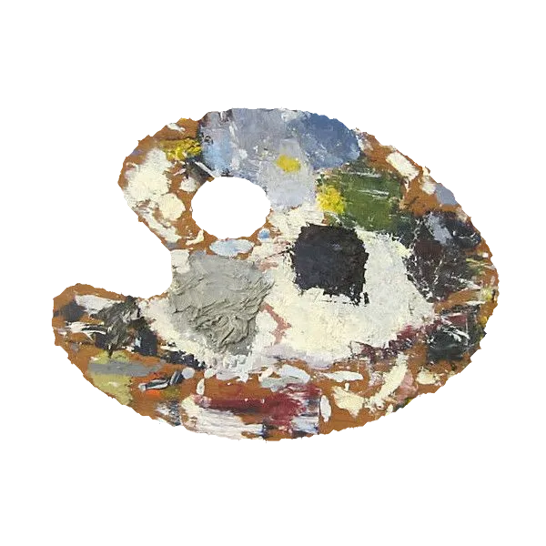
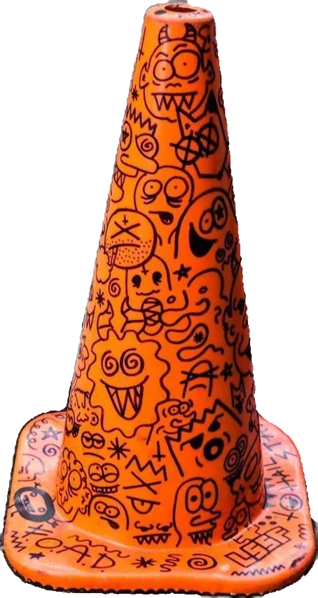
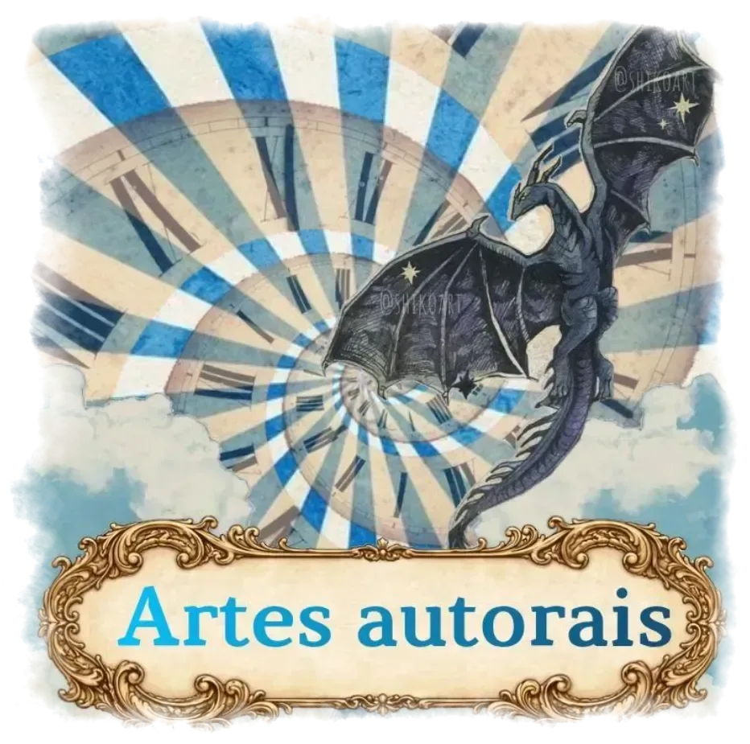
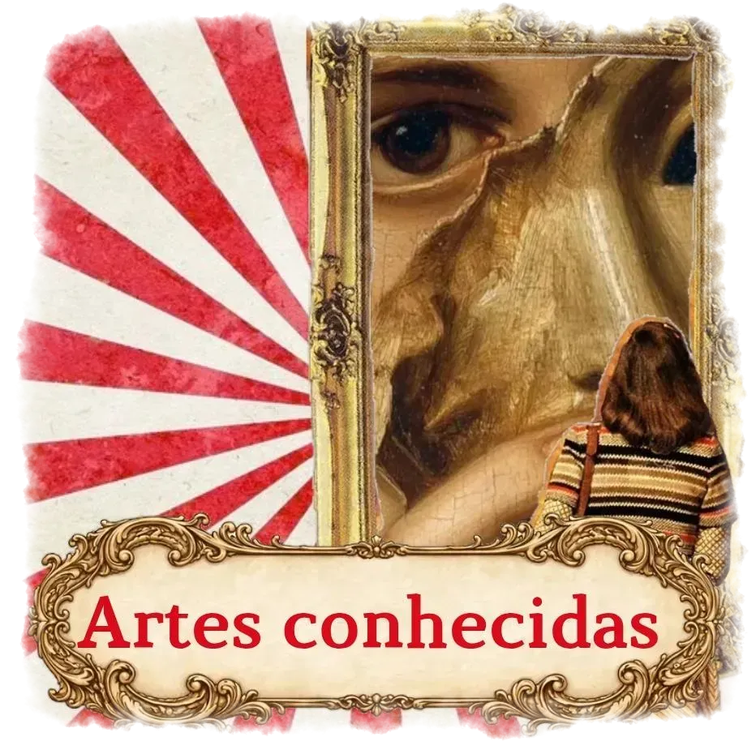
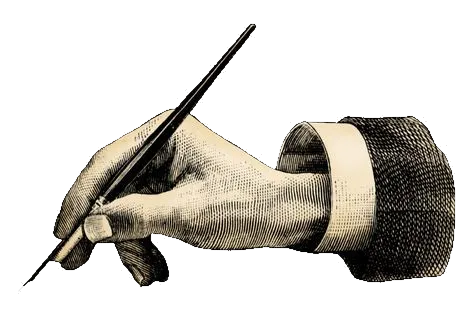
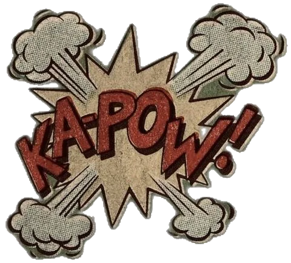
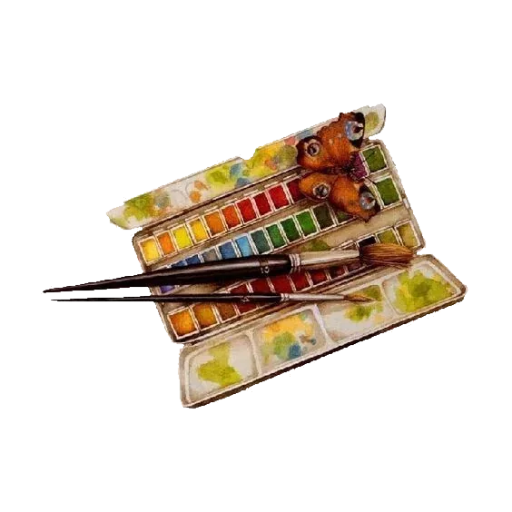
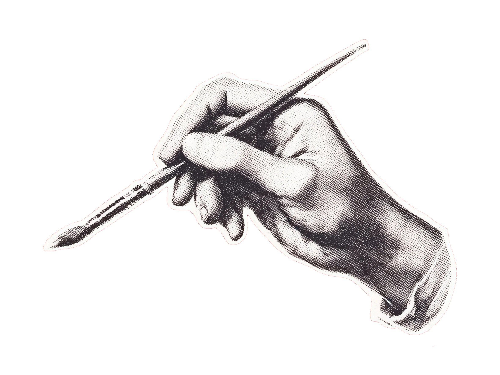
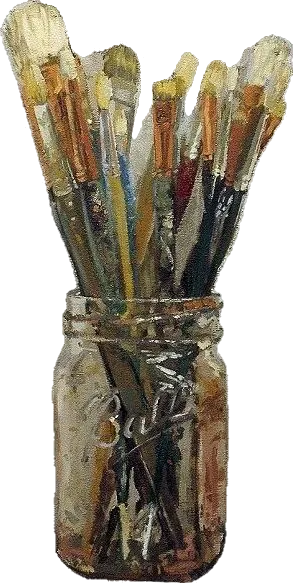
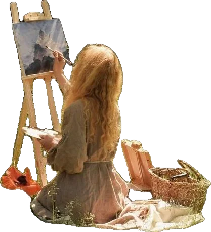